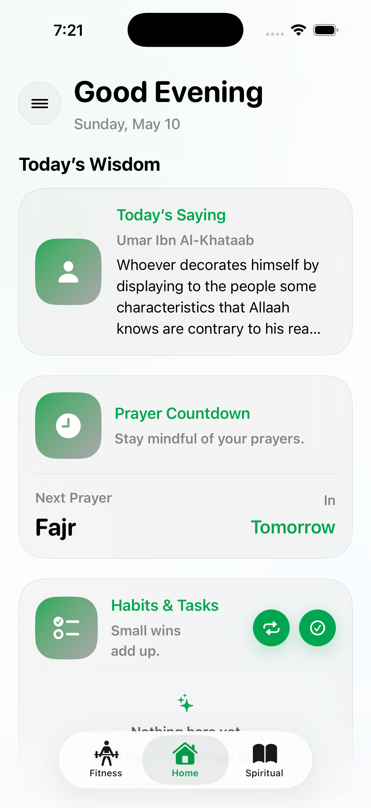
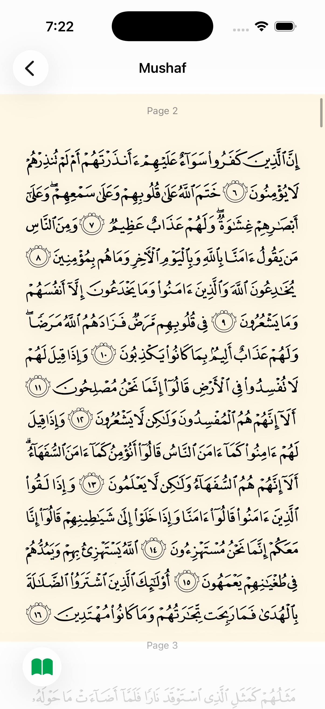
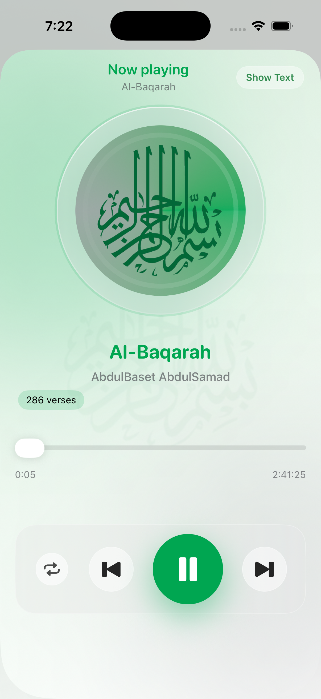

Izzah is a daily companion for Muslims who want to grow in worship, character, and physical strength — the way the companions of the Prophet ﷺ did, all at once.

Izzah exists to help you walk the same path — in small, daily steps. One ayah listened to, one prayer logged, one workout completed, one honest reflection written down. The companions did not become who they were by accident; they were forged by discipline, day after day. We aim, in our humble way, to help you do the same.
A believer grows best when spiritual clarity, emotional strength, and physical health are nurtured together.
The Prophet ﷺ and his companions did not separate ibadah from akhlaq, or akhlaq from the body. They prayed, fasted, fought, taught, traded, and lived among their people — all from the same inner ground.
Today most of us split that life across five apps and three coaches. Izzah is the attempt to put it back into one place — small enough to open every day, deep enough to actually shape who you become.
Every feature is built for daily, repeatable use — not flashy one-time engagement.
Anchor your day with the Word of Allah — read the Mushaf in authentic Uthmanic script, or listen to full surahs from world-renowned qaris while you work, walk, or rest.
Accurate prayer times for your location, a Qibla compass calibrated for wherever you are, and a quiet way to track the prayers you pray at the masjid — so the habit builds week after week.
Sayings from the sahaba and scholars to start the day, and private end-to-end encrypted journals to end it. Plus daily habits and to-dos, so small wins compound into a different person.
Care for the body entrusted to you. Log every set, see real volume and estimated 1RM, and track weight and steps over time — fitness as ibadah, not vanity.
A calm, focused interface. No streaks shaming you, no notifications begging for attention. Just the practices that matter.
Today's wisdom, next prayer, habits and tasks — all in one glance.

Authentic Uthmanic script paired with The Clear Quran translation.

Full surahs from world-renowned qaris. Background audio, lock-screen controls.
If you don't see your question here, reach out at admin@izzah.org. A real person will write back.
Qibla points toward Makkah. The compass uses your device's location to calculate the precise direction from wherever you are.
Prayer times are calculated using the Shafi school's Asr rule, where shadow length = 1.
Yes. All journal entries are encrypted on your device for your privacy.
Only three categories are stored in our database: workouts, journals, and weight tracking.
Everything else — to-do lists, masjid tracking, listening time, prayer times, Qur'an content — is stored on your device. If you delete the app, this on-device data will be lost.
Total volume is computed per exercise per workout as the sum of weight × reps across all sets (in lb-reps).
Average volume is the mean of those per-workout totals for the selected exercise over your chosen date range — that is, average volume per session, not per set.
Estimated 1-rep max is calculated per workout from the heaviest set of that exercise using the Epley formula:
Estimated 1RM = weight × (1 + reps / 30)
Weights are in pounds.
Or email admin@izzah.org.
Izzah is built for Muslim youth and young adults. We collect the minimum needed for the app to work, and we never sell, share, or profile from your data.
We have zero access to your prayer times, Qur'an progress, to-do lists, masjid tracking, hadiths, or Qibla data. These never leave your phone.
Not tied to your identity. Not used for profiling. Never shared or sold.
Izzah ("we," "us," "our," or "Company") is committed to protecting your privacy. This Privacy Policy explains how we collect, use, disclose, and safeguard your information when you use our mobile application Izzah (the "App"). Please read this Privacy Policy carefully. If you do not agree with our policies and practices, please do not use our App.
Information you provide directly:
Information collected automatically:
Health and fitness data: if you grant permission, we may access step count, heart rate during workouts, and other health metrics you manually input.
Device storage (primary) — we cannot access this data. Everything except workouts, body weight, and journals is stored ONLY on your device. This includes prayer times, Qur'an content and recitation progress, hadiths and daily verses, Qibla compass data, to-do lists, and all other app features. If you delete the App, this data will be permanently lost, and we cannot recover it for you.
Cloud storage — limited to three data categories only. Only the following are synced to secure cloud servers (optional):
This cloud-stored data is not tied to your identity, not used for profiling or tracking, not shared or sold, and exists solely to enable cross-device sync.
Data encryption: journal entries are encrypted end-to-end. All data transmitted to and from our servers is encrypted using industry-standard security protocols. Access to your data is restricted to authorized personnel only.
Data retention and deletion: synced data is retained as long as your account is active. You can request complete deletion of your cloud data at any time by contacting us at admin@izzah.org.
Apple HealthKit (optional): if you grant permission, we integrate with Apple HealthKit to read step count and health data. This data remains on your device and is not sent to our servers.
You have the right to access all your data within the App, export your data (where technically feasible), delete your account and all associated cloud data, disable cloud syncing while keeping your device data, and revoke location permissions. To exercise any of these rights, contact us at admin@izzah.org.
Izzah is designed for Muslim youth and young adults. We do not knowingly collect information from children under 13. If we become aware that we have collected information from a child under 13, we will take steps to delete such information and terminate the child's account.
We may update this Privacy Policy from time to time. We will notify you of any material changes by updating the "Last Updated" date at the top of this policy. Your continued use of the App constitutes your acceptance of the updated Privacy Policy.
Email: admin@izzah.org
GitHub: github.com/YamanShqeirat/Izza-Support
Izzah is available now on the App Store. May Allah make us of those who walk the path of His beloved companions.
Download on the App Store